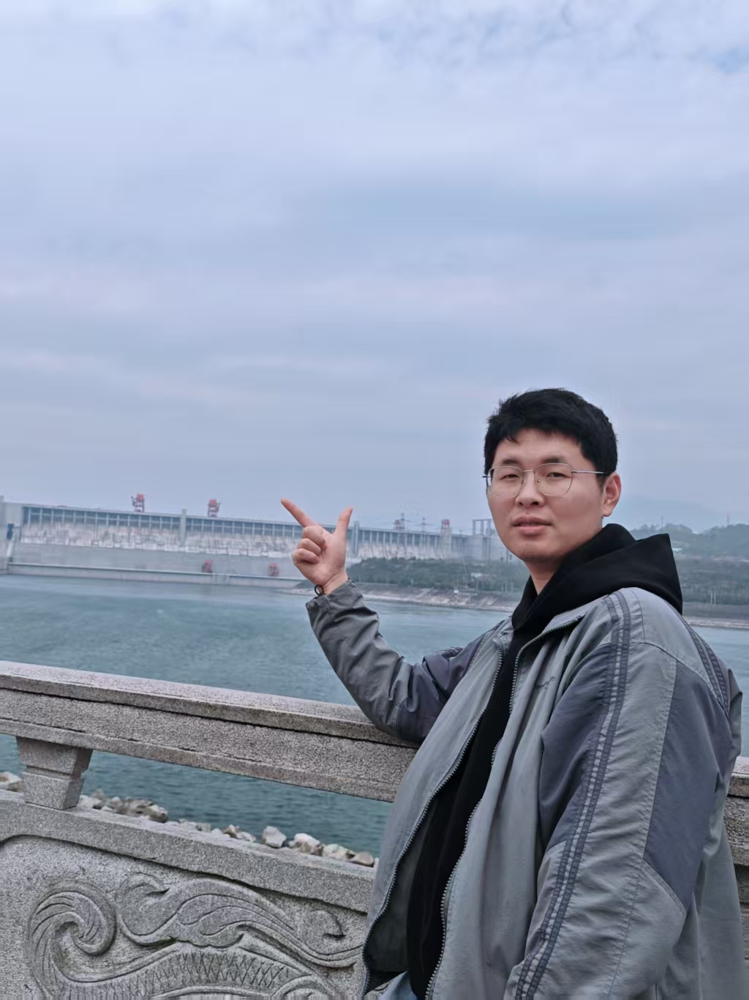

有机光伏材料的合成方法学
开发有机光伏材料的高效合成方法，简化聚合物给体结构单元的制备路线，并发展分子量可控的聚合策略，提高材料制备的重现性。
Lin-Yong Xu
研究聚焦有机光伏材料的合成方法学与构效关系，发展高效的材料合成路线和分子量可控的聚合方法，并探究分子特性对活性层形貌形成及器件效率与稳定性的影响。
xuly@xtu.edu.cn至今 · 湘潭大学化学学院工作

开发有机光伏材料的高效合成方法，简化聚合物给体结构单元的制备路线，并发展分子量可控的聚合策略，提高材料制备的重现性。
结合物理化学参数分析、理论计算与光谱表征，研究给受体相容性、电子结构与激发态动力学，探究这些特性与活性层形貌形成、器件效率及稳定性的关系。
2027 年计划招收 1–2 名硕士研究生。欢迎对有机光伏材料与光电高分子感兴趣的同学邮件联系。
Lin-Yong Xu†, Zicheng Xing†, et al. Advanced Materials 38, e74059.
Lin-Yong Xu†, Yuan Gao†, et al. Angewandte Chemie International Edition 65, e19713.
Yuan Gao†, Lin-Yong Xu†, et al. Energy & Environmental Science 18, 7302.
Lin-Yong Xu†, Wei Wang†, et al. Nature Communications 15, 1248.
Shanshan Wang†, Lin-Yong Xu†, et al. Energy & Environmental Science 17, 2610.
Lin-Yong Xu†, Yuan Gao†, et al. Energy & Environmental Science 16, 3942.
Linyong Xu, Wuxi Tao, et al. Journal of Materials Chemistry A 9, 11734.
Linyong Xu†, Wuxi Tao†, et al. ACS Applied Energy Materials 4, 11624.
† 表示共同第一作者。
发明专利申请 · 闵杰、徐林勇
湖北省自然科学基金非共识项目 · 参与
化学博士 · 导师 闵杰教授
化学硕士 · 导师 赵斌教授
应用化学学士 · 导师 钟超凡教授